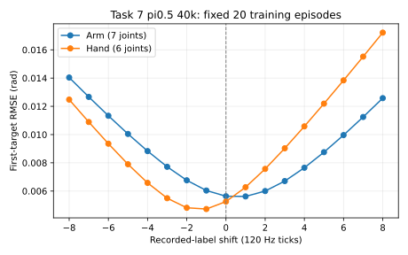

2026-11-11。所有新增闭环行均为 diagnostic；原匹配100条基线及正式表保持不变。
快照时间 2026-11-13T15:58:23.056164+00:00。原匹配100条辅助基线及上面的已闭合诊断不变。
| π0.5 h4 诊断 | 闭合/计划 | v1.1 / r1 / r1-released / r-max-released 整任务成功 | 状态 |
|---|---|---|---|
| default_h4 | 4/20 | 0 / 0 / 0 / 0 | 未满额，服务随实例重建中断 |
| overlap2old25_h4 | 17/20 | 0 / 0 / 0 / 0 | 未满额，服务随实例重建中断 |
| initial_arm_hold24_h4 | 2/2 | 0 / 0 / 0 / 0 | 完成 |
三组当前 unresolved unknown 均为0；每组各有1条曾因基础设施中断而在同一seed重试闭合，历史事件保留，unknown-as-failure敏感性结果仍为0。重叠平滑组第17条只补做了原始轨迹的CPU验收和归档，37文件共430136944字节独立读回SHA一致，没有重跑仿真。未满额组不作为已完成20条的最终成绩。
MemoryVLA后50条已在重建实例上启动新准入。当前专家通过 1/10；实际模型准入与新模型case尚未完成。只有10条专家、1406项实际权重、5帧张量/动作、64次历史记忆推理核验通过后才进入模型续测。33.5GB权重已只读核对全文件SHA并预热缓存，不把缓存操作当模型加载或准入。
| 执行步数 | 闭合/有效/unknown | v1.1 / r1 / r1-released / r-max-released 整任务成功 | v1.1 / r1 / released / r-max 平均阶段（有效轨迹） |
|---|---|---|---|
| h8 | 50 / 48 / 2 | 1 / 1 / 1 / 1 | 1.1458 / 3.1875 / 2.7708 / 2.6667 |
| h2 | 20 / 20 / 0 | 0 / 0 / 0 / 0 | 0 / 1.05 / 0.5 / 0.55 |
h8 成功率1/50=2%，Wilson95%为0.354%–10.495%。unknown留在完整分母；成功轨迹r007有独立逐tick七阶段和释放核查，且未经历基础设施重试。附着后端证据限于记录的native接触与attach manager，不声称存在独立USD约束删除记录。
该变体移除了ToMe，历史槽仅在真实推理时更新。h2与h8因此具有不同历史采样节奏。原始MemoryVLA匹配100条仍为0/100。本诊断不是纯记忆机制的因果对照；只有两个固定布局重复，不能称为50个不同几何场景。r-max的阶段前提不同，部分阶段数不保证逐例大于r1。
固定episode0–9与50–59，覆盖第一个子任务全部帧及首次切换后30帧，共8380次真实模型推理。20份预测归档已独立读回核对字节和SHA；原始动作标签与训练归一化往返标签逐位一致。前8步手臂RMSE为0.008123 rad（bootstrap95% 0.007856–0.008414），手部为0.009994 rad（0.009313–0.010635）。这不代表七阶段闭环成功率，也不证明后续六阶段拟合充足。
实际训练loader在固定20条全部45611帧上与interval_end最后有效tick一致，归一化往返误差为0。首目标对标签平移±8个120Hz tick的曲线如下；最佳点为手臂+1、手部−1，并不支持7-tick接口错位的判断。

独立核验、全部前缀RMSE、逐episode及原始归档SHA
固定20条训练episode，每阶段取5个预定有效帧分位点，共700帧；加上首帧图像/状态对照，共740次真实推理。七阶段的前8步手臂RMSE范围为0.00647–0.00995 rad，手部为0.00265–0.01003 rad。该稀疏开环检查不等于全阶段闭环成功。
训练与当前Native首帧手臂q13相同，手部最大差4.32e-7 rad，原始RGB MAE为1.946与2.007/255。固定状态、文本和噪声，只替换图像后，首帧前8步手臂RMSE为0.010836→0.010896 rad，手部为0.021872→0.021765 rad；两项配对bootstrap区间均跨0。只替换该微小q13差时，token和动作均不变；原始A0的模型输出逐位复现。
B是当前MemoryVLA Native场景的两张首帧，重复用于20个训练episode；不是20次独立渲染，也不是原P5主表的部署抓帧。结果不支持这组当前首帧像素差异导致误差成倍放大，但不能外推原P5服务、后续图像或闭环累积误差。下一步仍须审计实际部署链的神经输出和首处分叉。